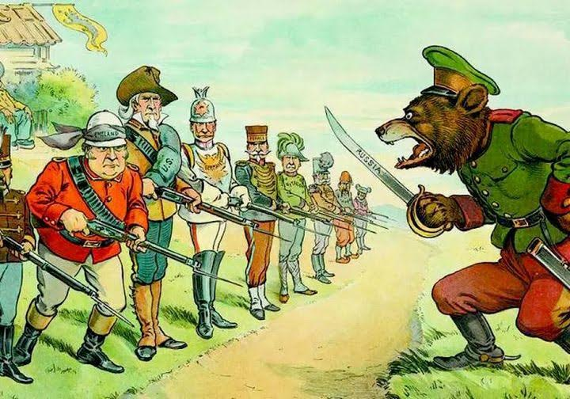

Ricognizioni / Antonio de Felip /
Una russofobia che viene da lontano
Un articolo di Antonio de Felip sulle radici storiche della russofobia, pubblicato su Ricognizioni.
Leggi su RicognizioniAttualita
Estratti dalla stampa e dal web e articoli scritti dal Circolo su temi di attualita legati alla cultura russa.

Ricognizioni / Antonio de Felip /
Un articolo di Antonio de Felip sulle radici storiche della russofobia, pubblicato su Ricognizioni.
Leggi su Ricognizioni.jpg)
Documento / Antonio de Felip
Un testo di Antonio de Felip sulla tradizione di Mosca come Terza Roma e sui suoi significati storici, religiosi e culturali.
Scarica il documento (Word, italiano)Convegno / Milano / 13 settembre 2026
Il convegno sulla Guerra Patriottica del 1812 ha riunito a Milano contributi storici, militari e spirituali dedicati alla memoria di quella guerra e della battaglia di Borodino.

Mosca / 6 settembre 2026
La processione dedicata alla Sinassi di tutti i Santi di Mosca, guidata dal Patriarca Kirill, ha percorso circa 6,5 chilometri dalla Cattedrale di Cristo Salvatore al Monastero di Novodevičij. Ha partecipato anche una delegazione del Circolo.
Leggi l'articolo